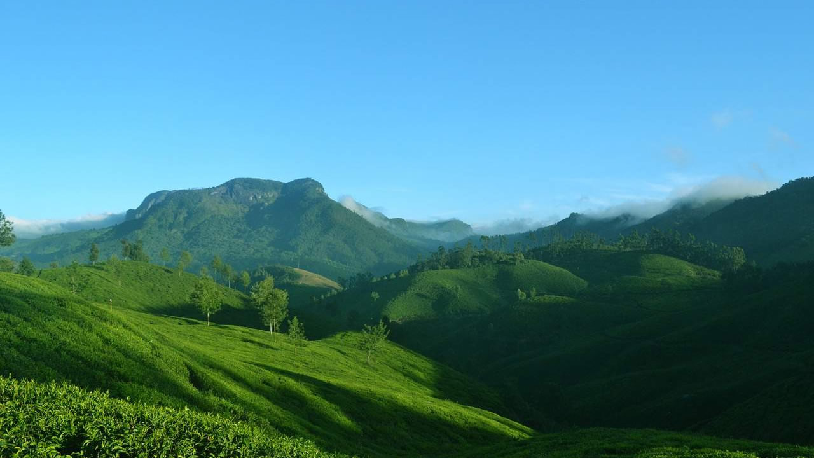
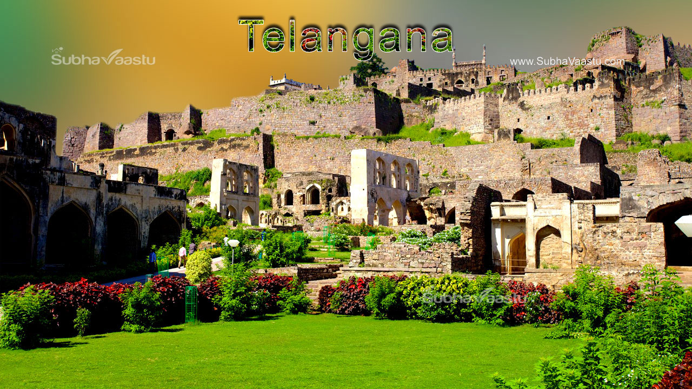
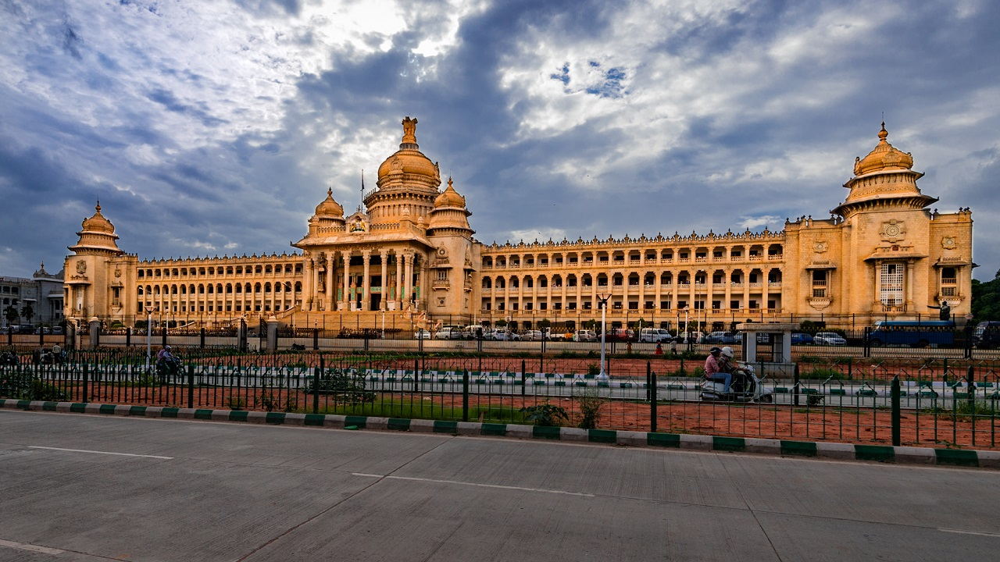
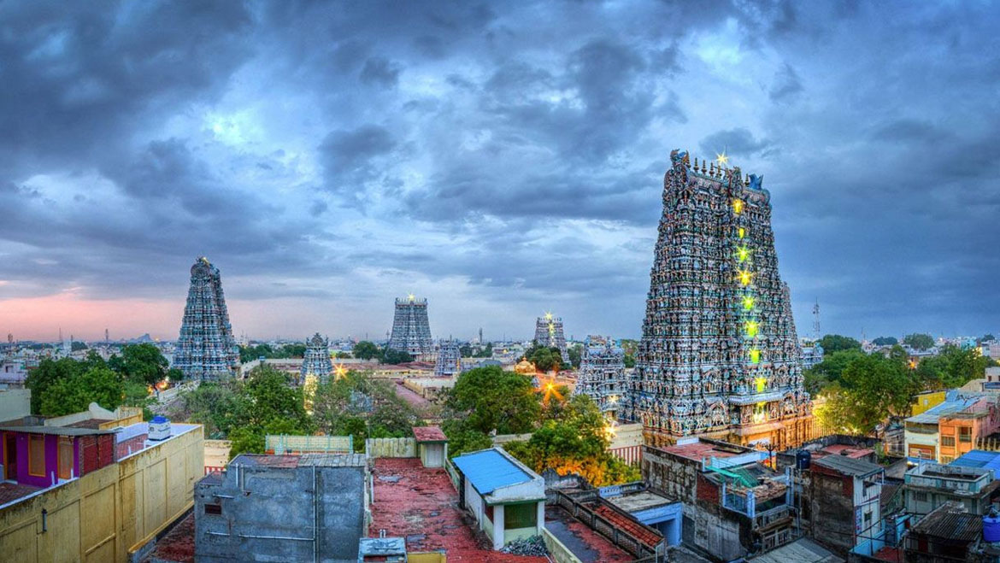

India

India ia a very vast country, rich in cultural heritage and breathtaking natural beauty and resources.
India is popular for its integrity amongst the rich diversity of people speaking multiple different languages.
One can travel within India with any travel segments like luxury stays like palace hotels, or even moderate options
like guesthouses or homestays. This naturally adds to the appeal as one of the possible travel destinations.
Kerala

Kerala is situated on the southwestern tip of India.
The state of Kerala is divided into hills and valleys, midland plains and coastal belts.
The backwaters suitated along the coastal betls are one of the main tourist attraction of Kerala.
Kerala is also popularly known as "Gods Own Country" because of its breathtaking natural beauty and greenary.
Telangana

Telangana is situated on the middle of India.
The state of Telangana is divided into hills and valleys, midland plains and coastal belts.
The backwaters situated along the coastal betls are one of the main tourist attraction of Kerala.
Telangana is also popularly known as "Gods Own Country" because of its breathtaking natural beauty and greenary.
Karnatka

Telangana is situated on the middle of India.
The state of Telangana is divided into hills and valleys, midland plains and coastal belts.
The backwaters situated along the coastal betls are one of the main tourist attraction of Kerala.
Telangana is also popularly known as "Gods Own Country" because of its breathtaking natural beauty and greenary.
Tamil Nadu

Telangana is situated on the middle of India.
The state of Telangana is divided into hills and valleys, midland plains and coastal belts.
The backwaters situated along the coastal betls are one of the main tourist attraction of Kerala.
Telangana is also popularly known as "Gods Own Country" because of its breathtaking natural beauty and greenary.